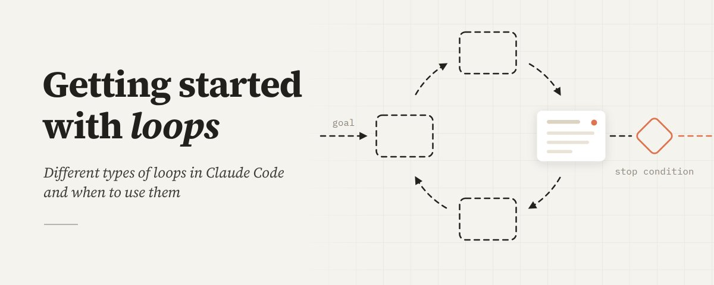

Getting started with loops
循环是重复干活，直到停条件成立
- 分类
- AI
- 来源
- X · @ClaudeDevs
- 原文
- 整理
- 原文链接
- 原文
先看这五句
- X 上对 loop 的定义很乱。团队口径：agent 重复一轮轮工作，直到停条件成立。
- 先选最简单的那种。不是每个任务都需要复杂循环。
- 四类：turn-based、
/goal、时间触发、proactive。分别靠你、验收条件、时钟、事件来转。 - 质量来自系统，不来自多转几圈。干净仓库、可验证 Skills、第二双眼睛审查；单次失败要编码回系统。
- 循环必须有边界。对的原语和模型、明确完成条件、先小范围试、确定性工作用脚本。

这是一份阅读笔记，不是原文转载。Claude Code 团队（文末署名 @delba_oliveira）把「设计循环」从口号收成一张分类表：怎么触发、怎么停、用哪条原语、适合什么活。
四种循环
| 类型 | 触发 | 停止 | 适合 |
|---|---|---|---|
| Turn-based | 你的一句 prompt | Claude 判断做完或需要更多上下文 | 短、不定期的活。每条 prompt 都是一次由你导演的 agentic loop |
Goal-based /goal | 实时手动 | 目标达成或达到回合上限 | 有可验证出口的任务。你定义 done，评估模型在它想停时把它打回去 |
Time-based /loop /schedule | 时间间隔 | 你取消，或工作完成（PR 合上、队列清空） | 重复劳动，或对外系统按间隔反应。/loop 跟机器走，关机即停；/schedule 把例程放到云上 |
| Proactive | 事件或日程，人不必在场 | 每个子任务看自己的 goal；例程直到你关掉 | 定义清楚的流：bug 报告、分诊、迁移、依赖升级 |
Turn-based 的验证可以写进 SKILL.md，配能量化结果的工具，Claude 才能自己验。Goal 对确定性标准特别有效：测试通过数、分数阈值。Proactive 是组合：/schedule 巡检，/goal 加 Skills 定义完成，Dynamic Workflows 编排分诊/修复/审查，Auto mode 不再逐次要权限。
质量与 token
循环输出的质量取决于外围系统：仓库本身要干净（模型会跟已有惯例走）；用 Skills 编码「好」长什么样；文档要够得着；用第二 agent 做 code review，新鲜上下文更少被实现理由绑架。单次结果不达标，不要只修这一次，把它写回系统。
管 token：选对原语和模型；完成和停止条件写清楚；Dynamic Workflows 可能拉起上百个 agent，先在小切片上试；确定性步骤用脚本，别每次推理重写；例程间隔对齐被观察对象的变化频率。用 /usage、/goal（无参数看回合和用量）、/workflows 盯消耗，随时能停。
起步方法：看自己已经在做的事，找你是瓶颈的那一块——验证能写下来吗？目标够清楚吗？活是不是按点来？跑起来，看它卡在哪、伸手过长在哪，再改。